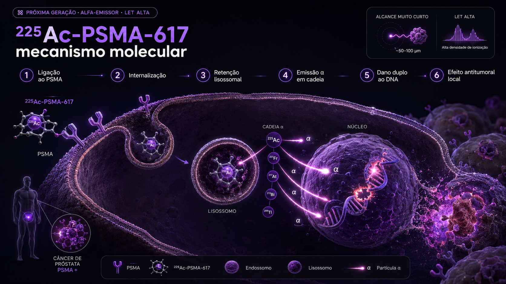

01 Cronologia
Da primeira aprovação alfa em oncologia (223Ra, 2013) à primeira série de mCRPC refratários ao 177Lu salvos por 225Ac (Heidelberg, 2016): a era alfa só começou.
Aprovação do 223Ra · primeiro alfa em oncologia
Xofigo (cloreto de 223Ra) é aprovado pelo FDA para mCRPC com metástases ósseas sintomáticas. Prova clínica de que alfa-emissores funcionam in vivo com perfil de toxicidade aceitável. Abre caminho conceitual para os próximos.
Heidelberg · primeiros pacientes com 225Ac-PSMA-617
Kratochwil, Haberkorn e cols. (DKFZ Heidelberg) tratam dois pacientes com mCRPC refratário ao 177Lu-PSMA-617. Resposta dramática em ambos — o "paciente-índice" alcançou PSA <0,1 ng/mL e regressão completa de extensa carga tumoral PSMA-positiva.
Séries WARMTH e indianas
Sathekge (África do Sul), Yadav (Índia) e o consórcio europeu WARMTH publicam séries de centenas de pacientes com mCRPC tratados com 225Ac-PSMA. PSA50 50-65%, perfil de toxicidade caracterizado: xerostomia mais intensa que 177Lu, anemia comparável.
225Ac-DOTATATE em NET refratário
Estudos indianos (Yadav, Singh) e australianos demonstram resposta em ~50% dos pacientes com NET progressivos pós 177Lu-DOTATATE com 225Ac-DOTATATE. Salva pacientes sem outras opções terapêuticas.
161Tb · primeiros estudos clínicos
PSI/Bern e Heidelberg iniciam fase 1 com 161Tb-PSMA-I&T e 161Tb-DOTATATE. Mesma química do 177Lu, mas com elétrons Auger adicionais → eficácia esperada superior em micrometástases.
212Pb-DOTAMTATE · ALPHAMEDIX-1 (Cancer Discovery)
Delpassand e cols. publicam fase 1-2 do 212Pb-DOTAMTATE (Perspective Therapeutics (ex-RadioMedix)) em NETs SSTR-positivos. ORR 62%, PFS prolongada. Primeiro alfa-emissor em PRRT a apresentar dados sólidos de fase 2.
AcTION, ECLIPSE-Ac225, ALPHAMEDIX-2 · fase 2-3
Programas registrais lançados: AcTION (Novartis, 225Ac-PSMA-617 fase 1-2), ECLIPSE-Ac225 (mCRPC pós-Lu), ALPHAMEDIX-2 (212Pb-DOTAMTATE fase 2-3 em NET). Programas registrais em andamento, com possível submissão/aprovação nos próximos anos.
Pipeline em expansão
227Th conjugado a anticorpos (Bayer · BAY2701439 anti-FGFR2, BAY3547926 anti-PSMA), 211At-MABG (neuroblastoma), 225Ac-FAPI (vários tumores). Mais de 30 ensaios fase 1-2 abertos globalmente.
02 Por que alfa? Princípios físicos
Três propriedades das partículas alfa explicam por que elas resolvem problemas que o β⁻ não resolve: alta LET, alcance subcelular e baixa dependência de oxigênio.

Ligação ao PSMA
O 225Ac-PSMA-617 reconhece e se liga ao PSMA, uma proteína transmembrana frequentemente superexpressa na superfície das células do câncer de próstata avançado.
Internalização
Após a ligação ao receptor, o complexo PSMA–radioligante é internalizado pela célula tumoral, levando o radiofármaco para o compartimento intracelular.
Retenção lisossomal
O radioligante internalizado é direcionado para endossomos e lisossomos, onde permanece retido próximo às estruturas celulares críticas.
Emissão α em cadeia
O 225Ac decai em uma sequência de radionuclídeos-filhos, liberando múltiplas partículas alfa de alto LET e alcance muito curto, concentrando grande densidade de energia em escala subcelular.
Dano duplo ao DNA
As partículas alfa produzem ionização intensa e localizada, causando quebras de dupla fita no DNA, dano celular complexo e baixa dependência de oxigênio para o efeito citotóxico.
Efeito antitumoral local
O resultado é morte tumoral altamente localizada, com potente efeito sobre células PSMA-positivas e menor irradiação de tecidos distantes, devido ao curto alcance das partículas alfa.
Elétrons Auger têm energia muito baixa (eV-keV) e alcance nanométrico (poucos nm). Para causar dano significativo precisam estar dentro do núcleo da célula — o que requer internalização do radioligante. Quando isso acontece, a densidade de ionização local pode ser comparável à de partículas α — um efeito que depende criticamente dessa localização subcelular/nuclear. 161Tb é particularmente atrativo porque combina β⁻ moderado (cobertura mm) com Auger (precisão subcelular) — o melhor dos dois mundos para tumores heterogêneos.
03 Isótopos disponíveis
Cinco emissores α e um Auger ocupam o centro do palco. Cada um com perfil físico, vetor preferido e estado de desenvolvimento clínico próprios.
Actínio-225
Térbio-161
Chumbo-212
Tório-227
Astato-211
Bismuto-213
04 β vs α · tabela detalhada
Mesmas plataformas químicas, físicas opostas. A escolha entre 177Lu e 225Ac (ou 161Tb) depende de carga tumoral, padrão de captação, estado dosimétrico e disponibilidade.
| Parâmetro | β⁻ · 177Lu (referência) | α · 225Ac · 212Pb | β⁻ + Auger · 161Tb |
|---|---|---|---|
| Energia média/máx | 134 / 498 keV | 5-9 MeV (α) | 154 / 593 keV + e⁻ Auger |
| Alcance médio | ~ 0,7 mm | 50-100 μm | ~ 0,7 mm + nm (Auger) |
| LET | 0,2 keV/μm | 80 keV/μm | 0,2 + alta local (Auger) |
| Crossfire | centenas de células | poucas células | amplo + subcelular |
| Quebras de DNA | SSB > DSB | DSB densas | SSB amplo + DSB no núcleo |
| Dependência O₂ | parcial (ROS) | mínima | parcial (β) + mínima (Auger) |
| Lesões pequenas | moderada | excelente | excelente (Auger) |
| Lesões grandes | excelente | moderada (heterogênea) | excelente |
| Toxicidade salivar | moderada (PSMA) | severa (recoil/PSMA) | moderada (similar Lu) |
| Imagem pós (γ) | 208 keV (10%) | fraco (221Fr 218 keV) | 49 keV + 75 keV (Auger) |
| Disponibilidade | global | limitada (DOE-ORNL / JRC-Karlsruhe / IPN-Orsay) | limitada (PSI/ILL/SCK) |
| Status regulatório | aprovado FDA/EMA | fase 2-3 (212Pb registro próximo) | fase 1-2 |
Em prática 2026: (1) Refratariedade ao Lu com expressão preservada do alvo — mCRPC PSMA-PET ainda intenso após 177Lu-PSMA, NET SSTR-PET preservado pós 177Lu-DOTATATE. (2) Doença com micromets dominantes ou heterogeneidade alta. (3) Tumores hipóxicos grandes que respondem mal à β⁻. (4) Carga tumoral baixa pós-debulking, onde precisão subcelular é mais valiosa que crossfire.
05 Ensaios pivotais
Programa registral em pleno andamento. AcTION, ECLIPSE-Ac225 e ALPHAMEDIX-2 são os mais avançados.
mCRPC pós 177Lu-PSMA · n > 200 acumulados · acesso compassivo / fase 1-2
Maior experiência mundial. Salva mCRPC refratários ao Lu mantendo PSMA-PET positivo.
mCRPC pós-Lu · n=128 · 225Ac-PSMA-617 · fase 1-2
Estudo registral conduzido pela Novartis. Pode levar à primeira aprovação de α em PSMA.
NET SSTR+ pós-Lu-DOTATATE · n=20 · 212Pb-DOTAMTATE · fase 1-2
Primeiro alfa-emissor em PRRT com dados sólidos de fase 2. Provoca caminho registral.
NET SSTR+ progressivo · 212Pb-DOTAMTATE · fase 2-3 · n > 200
Pode resultar em primeira aprovação de PRRT alfa para NET. Resultados aguardados 2025-26.
NET SSTR+ · 161Tb-DOTATATE · fase 1-2 · multicêntrico europeu
Substituição direta do 177Lu por 161Tb. Conceito atrativo: maior eficácia em micromets sem mudar logística.
mCRPC · 161Tb-PSMA-I&T · fase 1 dose-escalada
Testa hipótese de 161Tb-PSMA em substituição ao 177Lu-PSMA. Auger pode ser definidor em micromets.
Tumores FGFR2+ (gástrico, intra-hepático colangio, urotelial) · 227Th-FGFR2
227Th conjugado a anticorpo. Conceito de antibody-drug-conjugate radioativo. Fronteira biofarma + radio.
NET pós-Lu-DOTATATE · estudos retrospectivos / fase 1 · n > 60 acumulados
Alternativa ao 212Pb em centros sem acesso a Alphamedix. Resgate em pacientes pós-Lu.
06 Toxicidade · perfil típico
Compartilham com β⁻ a hematológica, mas xerostomia em PSMA é o ponto distintivo do 225Ac. 212Pb-DOTAMTATE em NET tem perfil mais semelhante ao Lu.
Duas hipóteses, possivelmente complementares: (1) recoil dos isótopos-filhos — após decaimento α, o núcleo-filho recebe energia de recoil suficiente para se descomplexar do quelante DOTA e migrar livremente; pode ficar retido em sítios PSMA-positivos secundários como glândulas salivares; (2) maior LET por evento em sítios já moderadamente captantes amplifica dano. Reduções de dose individual (50-100 kBq/kg em vez de 100-150) mitigam parcialmente sem perda de eficácia em séries publicadas. Tempering schemes (atividade decrescente entre ciclos) é prática emergente em centros experientes.
07 Logística e produção
A grande limitação dos α-emissores não é a eficácia — é a oferta. Cada isótopo tem uma cadeia produtiva única, com gargalos próprios.
| Isótopo | Fonte primária | Atual capacidade global | Limitação |
|---|---|---|---|
| 225Ac | Geradores de 229Th (DOE/ORNL, JRC Karlsruhe, IPN Orsay) + cíclotron (TR-30, NorthStar, TerraPower SPES) | < 2 Ci/ano (geradores) + escala industrial crescente (cíclotron) | Demanda mundial >> oferta. Produção cíclotron acelera entrega para 2026-27. |
| 161Tb | Reator a partir de 160Gd (PSI Suíça, ILL França, NRG Holanda) | Pequena escala atual | Cadeia limitada. Pode escalar com mais reatores adaptados. |
| 212Pb | Gerador 224Ra/212Pb (Perspective Therapeutics, NorthStar) | Escalável (gerador comercial) | 224Ra-mãe vem de 228Th — supply finito mas razoável. |
| 227Th | 227Ac → 227Th (Bayer in-house) | Limitada à própria Bayer | Plataforma fechada · captiva de programa registrais Bayer. |
| 211At | Cíclotron médio porte (209Bi(α,2n)211At) · poucos sites | Local · curto prazo | T½ 7,2 h obriga produção e entrega no mesmo dia. |
08 Perspectivas · 2026-2030
Quatro grandes movimentos em curso: (1) primeiras aprovações registrais, (2) integração teranóstica β-α-Auger, (3) plataformas TTC (anticorpos α) e (4) combinações com PARPi e imuno.
O futuro mais provável não é "α substitui β" — é uma teranóstica em camadas: imagem PET para selecionar e quantificar; β para tratar a maior parte da carga (dose-controlada, ampla); α (ou Auger) para resgatar refratários ou tratar micromets residuais; combinações com PARPi e imunoterapia para potencializar e ativar resposta sistêmica. Cada paciente um plano. Marcos, esta é a fronteira onde o seu Centro Teranóstico do HFR se posiciona para os próximos 5 anos.